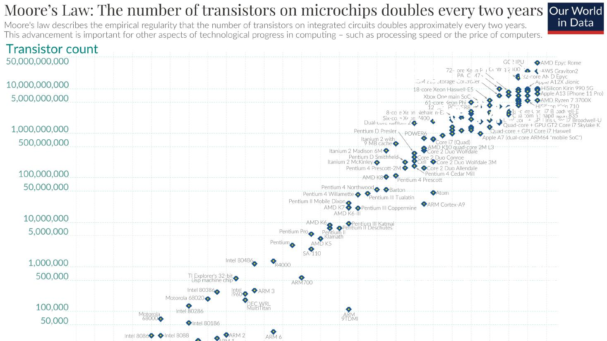
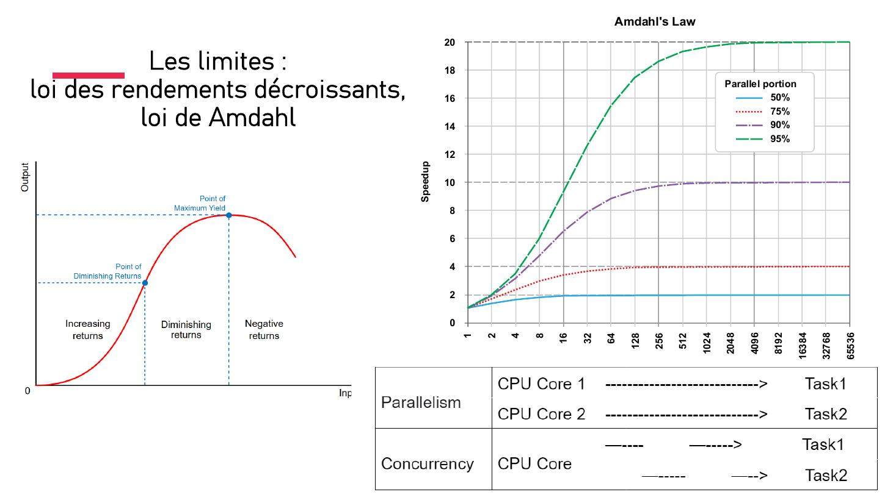

DIAPOSITIVES 41 à 45
Ce qui borne la machine — et que les projections d’investissement oublient.

Doublement du nombre de transistors présents sur une puce de microprocesseur tous les deux ans. C’est l’exponentielle de la fiche 6, mais tracée sur cinquante ans de faits et non sur une hypothèse — et c’est aussi ce à quoi Sam Altman compare ses lois d’échelle en fiche 2, pour dire qu’elles vont plus vite encore.

La loi d’Amdahl est l’objection la plus sèche au pari du gigantisme :
Même avec un nombre infini de processeurs, l’accélération reste bornée par la portion non parallélisable.
Et la courbe des rendements dit l’autre moitié : passé le point de rendement maximal, produire une unité de plus devient inefficace, puis contre-productif. Mises côte à côte, ces deux lois donnent la contrepartie physique aux 500 milliards de dollars de la fiche 2 : on ne rachète pas indéfiniment de la performance avec du matériel.
L’appendice reprend le schéma complet du neurone artificiel — entrées, poids, biais, fonction de sommation, fonction d’activation, sortie — avec le même calcul déroulé dans un tableur.
Ce que l’appendice ajoute, en note : l’optimisation consiste à chercher les minima d’une fonction d’intégration sur plusieurs milliers — ou millions, ou milliards — de dimensions indépendantes.
« Paramètre » veut dire ici dimension, ou vecteur indépendant. C’est la traduction concrète de ce que la fiche 11 appelle minimiser l’écart entre résultats attendus et observés : chercher un creux dans un paysage à mille milliards de dimensions.
La dernière diapositive de la série met en regard un réseau neuronal des années 1980 — une couche cachée — et un réseau d’apprentissage profond — plusieurs couches cachées qui traitent des caractéristiques hiérarchisées.
Le commentaire de l’image dit le mécanisme mieux qu’une définition : les liens portent des signaux d’un nœud à l’autre, en les renforçant ou en les atténuant selon le poids de chaque lien. Dans le réseau profond, une couche identifie la valeur claire ou sombre du pixel, la suivante les contours, la suivante les combinaisons de contours, la suivante les traits — et la sortie donne un nom : « George ».